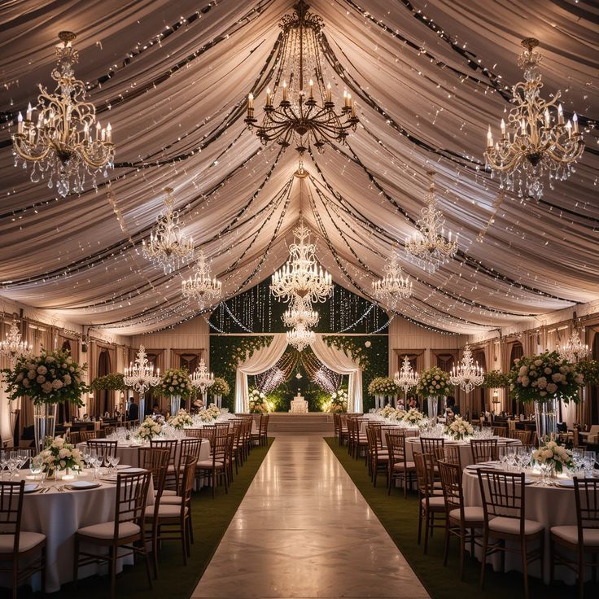
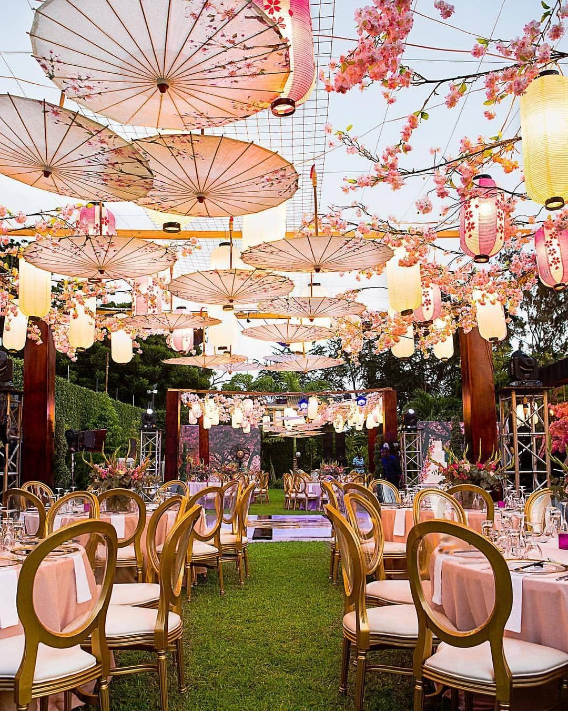
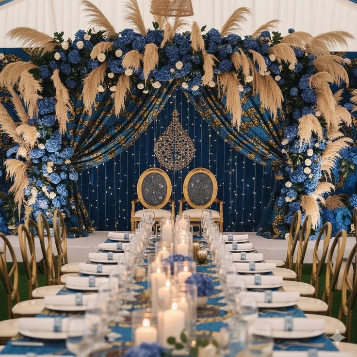

Elegance américaine

Cette oeuvre présente une décoration inspirée des réceptions américaines. Elle met en avant une organisation trés structurée à l’américaine qui transforme cet espace ordinaire en un endroit trés mémorables , elle mets l’accent sur la simplicité et l’harmonie de l’élégance moderne.
Cartel
- Style : moderne et élégant
- Eléments : lumiéres ,lustres , tables,chaises
- Couleurs dominantes : blanc , doré , ,beige
Charme asiatique

Cette oeuvre s’inspire d’une esthétique asiatique ,elle met l’accent sur la finesse de chaque details. l’harmonie de chaque couleurs , un charme à l’asiatique details a non seulement une beauté visuelle Mais également des significations puissances .
Cartel
- Compositions harmonieuse des couleurs
- Utilisations d’éléments décoratifs élégants
- Créations d’une ambiance raffinée et charmantes
Energie africaine

Cette oeuvre met en lumiére une décoration inspirée d’influence africaines. Elle se caractérise par l’énergie visuelle , l’usage des motifs , la richisse des tissus , Les couleurs chaudes et la valorisation d’éléments culturels . l’ambiance identitaire et expressive.
Cartel
- Style : chalereux et expressif
- Effet recherché : ambiance vivante , festive
- Eléments : tissus , motifs , accessoires culturels